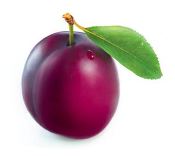

JESTES SLIWKA
 Ojoj, jestes sliweczka
Jesli jestes sliwka, to znaczy, ze jestes bardzo wrazliwa, mila i wyrozumiala wobec innych osoba
Niestety jestes tez prawdopodobnie rozmemlana i malo konkretna
Mimo to jestes bardzo lubiana ze wzgledu na swoja wyrozumialosc i to jest extra
Popracuj nad asertywnoscia i konkretnoscia